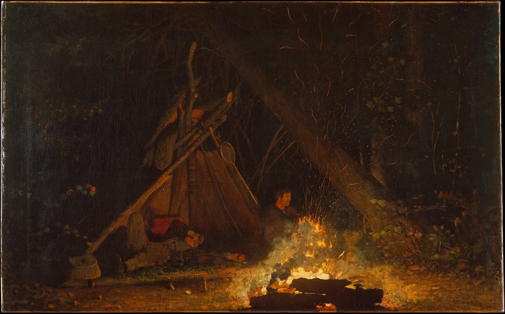

The Metropolitan Museum of Art. Gift of Josephine Pomeroy Hendrick, in the name of Henry Keney Pomeroy, 1927. 27.181.
Museum record · Public Domain / The Met Open Access (CC0)
Winslow Homer
Camp Fire
1880 · Oil on canvas
The painting also appears at the opening of Please Start From Here.
Project response, not artist intention. The fire offers a shared place, but the two people occupy it differently. That spoke to us as an invitation to begin together without assuming the same view.
Source and viewing copies
The unchanged museum JPEG is retained locally. Smaller full-frame viewing copies are used for display. No crop, retouch or generative alteration.
Image source details · Viewing-copy record · Artist and source note on the opening